| Sun Java Wireless Toolkit for CLDC User's Guide |
| Sun Java Wireless Toolkit for CLDC User's Guide |
| A P P E N D I X A |
|
Application Demonstrations |
This appendix describes the application demonstrations that are bundled with the Sun JavaTM Wireless Toolkit for CLDC.
The Sun JavaTM Wireless Toolkit for CLDC includes demonstration applications that highlight some of the technologies and APIs that are supported by the emulator. The goal of these demonstrations is to ive you a glimpse of the API features of the emulator and the enhancements throughout the toolkit.
TABLE A-1 lists all the demonstration applications that are included in this release.
Most demonstration applications are simple to run. Section A.2, General Instructions contains instructions for running most demonstrations. Demonstrations that have additional documentation are linked in TABLE A-1. If there is no link, the demonstration is simple (or has its own instructions) and the general instructions are sufficient.
The source code for every demonstration application is available in toolkit/apps directory. Subdirectories contain projects, and each project has a src directory that contains Java programming language source code. For example, on Windows, if the toolkit is installed in C:\WTK2.5.2, the source code for the SMS sender MIDlet (example.sms.SMSSend) in WMADemo resides in C:\WTK2.5.2\apps\WMADemo\src\example\sms\SMSSend.java. As discussed in Section 1.1.2, Working Directory Files, when you open a project it is copied to your workdir/apps directory.
Most of the demonstration applications can be run then launched with no special preparation. Some demonstrations, however, require changes to the toolkit preferences or settings. This section describes the general procedure.
The first step is to run the toolkit. To do this, go to the Microsoft Windows Start menu and choose Start > All Programs > Sun Java Wireless Toolkit 2.5.2 for CLDC > Wireless Toolkit 2.5.2. The user interface appears as shown in FIGURE A-1.
FIGURE A-1 Wireless Toolkit User Interface
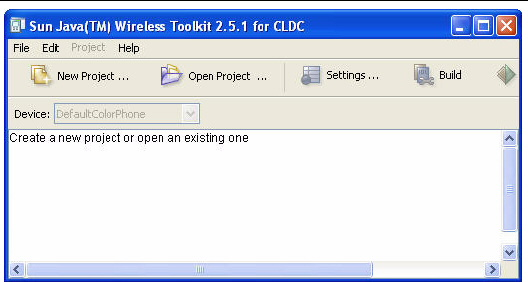
Click the Open Project button to open a demonstration application. A list of all the available applications appears. As discussed in Section 1.1.2, Working Directory Files, projects in the installation directory are italicized, and projects in your working directory are shown in bold (FIGURE 1-1). When you open a project in the installation directory a copy is created in your working directory, then opened.
Once the application is open you can press the Run button in the toolbar, or if an installation on the emulator is required, click Project > Run via OTA
The device emulator window opens with the demo application running. If there is a menu of MIDlets, use the navigation arrows to choose an item, then choose SELECT. As the demonstration progresses you might need to press one of the soft keys below the screen on the left or right side. You use soft keys to istall or launch an application, open a menu, exit, or perform some other action. Some examples include these instructions.
Some demonstrations require specific setup and instructions. For example, if an example uses web services and you are behind a firewall, you must configure the emulator's proxy server settings or the demo will fail:
Read each demonstration description for more operating instructions.
This MIDlet suite demonstrates the power of JSR 234 Advanced Multimedia Supplements (AMMS). It consists of the following MIDlets:
FIGURE A-2 Processing Images in a MIDlet
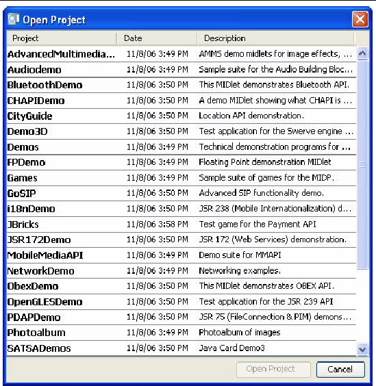
This application contains MIDlets that demonstrate the use of JSR 82's Bluetooth API.
The project BluetoothDemo shows how images can be transferred between devices using Bluetooth. You must run two instances of the emulator to see how this demonstration works.
In the first emulator, launch Bluetooth Demo, then choose Server. The emulator asks you if you want to allow a Bluetooth connection. Choose Yes. The server starts and displays a list of images. At the beginning, none of the images are available on the Bluetooth network. To make images available, select them and from the menu choose Publish image (or type or click 1). The icon color changes from purple to green, indicating it is published.
FIGURE A-3 Running the Bluetooth Demo Server
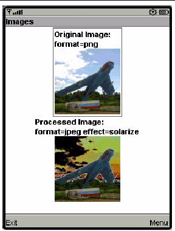
On the second emulator, launch Bluetooth Demo, then select Client. The MIDlet tells you it's ready to search for images. Click the Find soft button. The MIDlet finds the other emulator and get a list of images from it. Select one from the list and choose Load. The emulator asks if you want to allow the connection. Choose Yes.
FIGURE A-4 Image Transferred Using Simulated Bluetooth
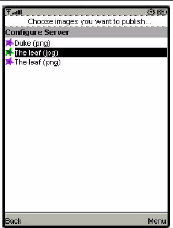
CHAPIDemo is a content browser (see JSR 211). It maintains a list of favorites and enables you to select and view various kinds of content.
This demonstration uses the content handler registry, so you cannot see all of its features when you use the Run button. Instead, use Project > Run via OTA to install the application into the emulator. If you don't know how to do this, read about it in Section 2.3.2, Install.
After you install CHAPIDemo, it appears in the application list as Text Viewer. It is a MIDlet that is a content handler for plain text. Select Text Viewer and choose Launch from the soft button menu. A list of favorite links appears.
FIGURE A-5 Viewing Favorite Links in CHAPIDemo
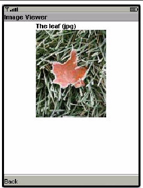
Use the navigation keys to highlight CHAPIDemo then press SELECT on the emulator. The application asks if it is OK to use airtime. Press the Yes soft button. A list of various types of content appears (FIGURE A-6).
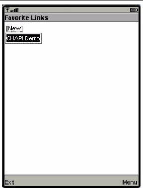
Try selecting one of the Duke.png. Use the arrows to highlight the link, then press SELECT to view the file. Using CHAPI, the ImageViewer MIDlet is launched and displays the content.
FIGURE A-7 Viewing a PNG Image
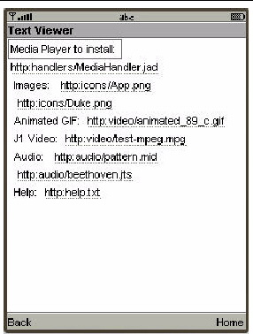
The other types of content require another content handler MIDlet suite, MediaHandler. To install this suite from CHAPIDemo, select the MediaHandler.jad link (the first item in the list shown in FIGURE A-6). The AMS is invoked and leads you through the installation.
After the MIDlet suite is installed, you can view the other types of content listed in Text Viewer. For example, select http:video/test-mpeg.mpg to see a series of images including the one shown in FIGURE A-8.
FIGURE A-8 Viewing an MPEG Movie Using MediaHandler
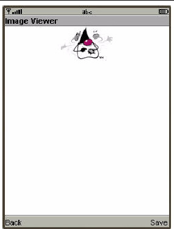
To view the content handler settings for the TextViewer and ImageViewer MIDlets, click Settings, then click on the Content Handlers icon. You might also wish to examine the MediaHandler project.
CityGuide demonstrates how to use the Location API (JSR 179). It shows a walker's current position superimposed on a city map. The walker moves around the city and landmarks are highlighted and identified as the walker approaches. In this demo we get the walker's location from an XML script named citywalk.xml (the event file) that submits the device location information. See Chapter 13 for a full explanation.
Because location prompts occur frequently, it is best to run this demonstration in manufacturer (trusted) mode, as explained in Section 6.2.1, MSA Protection Domains. In the user interface, select Edit > Preferences, then select Security. Choose Manufacturer for the Security domain.
Open and run the CityGuide project. In the emulator, launch the CityGuide MIDlet. Click Next to view the map page.
FIGURE A-9 Your Location in the City
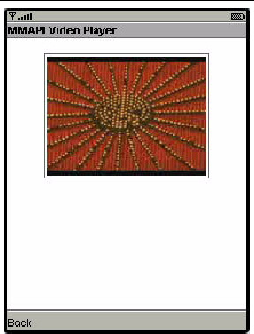
Choose MIDlet > External events from the emulator window menu. On the Location tab click the browse button. Select the following event file in workdir\apps\CityGuide\citywalk.xml.
The player buttons at the bottom of the window are now active. See FIGURE 13-1. Press the green play button (right-pointing triangle) to run the script.
The display shows four types of landmarks: restaurants, museums, shops, and theaters. To adjust the landmark display, open the soft menu and choose the Settings command. See FIGURE A-10. Use the navigation keys to highlight a category, then use SELECT to check or uncheck an item.
When you are near a landmark (shown highlighted on the map), open the soft menu and choose the Detail command to see more information. See Chapter 13 for more details on location scripts.
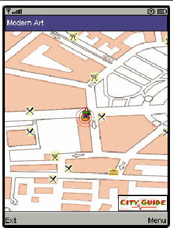
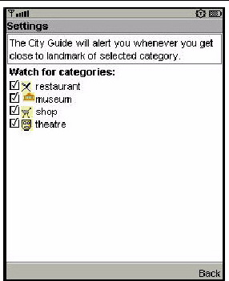
This demo contains several MIDlets that highlight different MIDP features.
This application displays a large horizontal rectangle that runs the width of the screen. Below, ten small vertical rectangles span the screen. Finally, three horizontal color bars indicate values for blue, green, and red (RGB). Values are expressed as decimal (0-255) or hexadecimal (00-ff) based on the first menu selection.
This MIDlet displays property values. For example, see FIGURE A-12:
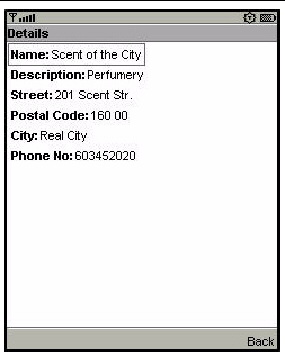
This test application uses an HTTP connection to request a web page. The request is issued with HTTP protocol GET or POST methods. If the HEAD method is used, the head properties are read from the request.
Before beginning, examine your settings as follows.
Launch the Http MIDlet. By default the MIDlet attempts to contact http://www.yahoo.com. To test, choose the Menu soft key and choose 1, 2, or 3 to test the selected URL.
Http Test returns the information it is able to obtain. If the information fills the screen use the down arrow to scroll to the end. The amount of information depends on the type of request and on the amount of META information the page provides. To provide body information or content, the page must declare CONTENT-LENGTH as described in RFC 2616.
Use the Menu soft key for the following actions.
This MIDlet shows the various fonts available: Proportional, Regular, Regular Italic, Bold Plain, and Bold Italic. Choose 1 or 2 from the menu to toggle between the system font (sans serif) and the monospace font.
Like the Http demonstration, This sample uses an HTTP connection to obtain information. Use the same preparation steps as Section A.7.3, Http.
Run the Demos project and launch the Stock MIDlet.
By default, the screen displays an empty ticker bar at the top. Below the ticker, the menu list shows four applications: Stock Tracker, What If? Alerts, and Settings. You must add stock symbols before you can use the first three applications.
To use the applications features, you must supply some stock symbols for the application to act upon.
To add a stock symbol to the ticker, use the navigation arrows to select Settings.
The display prompts you to enter a stock symbol. Type SUNW and select the Done soft key. The stock you added and its current value is now displayed in the ticker. Add a few more stock symbols, such as IBM and HPQ.
By default the update interval is 15 minutes. Select Updates to change the interval. Use the navigation arrows to select one of Continuous, 15 minutes, 30 minutes, 1 hour, or 3 hours. Select the Done soft key.
Select Remove a Stock. You see a list of the stocks you have added. Use the navigation keys to select one or more stocks to remove. Choose the Done soft key.
Stock Tracker displays a list of the stocks you added and their current values. Stock tracker display additional information about the selected stock, for example, the last trade and the high and low values.
Choose a stock and press SELECT.
What If? is an application that asks for the original purchase price and the number of shares you own. It calculates your profit or loss based on the current price.
Enter the purchase price and the number of shares, then press Calc.
This application sends you a notification when the price changes to a value you specify.
From the main menu, select Alerts.
Choose a Stock. The screen prompts, Alert me when a stock reaches. Enter an integer.
The alert is placed on the Current Alerts list. To remove an alert, press Remove and select the alert. Choose the Done soft key.
When the value is reached you will hear a ring and receive a message. For example, Symbol has reached your price point of $value and is currently trading at $current_value. Once the alert is triggered it disappears from the Current Alerts list.
This demonstrates how an online ticket auction application might behave. The home screen displays a ticket ticker across the top. The Choose a Band field displays Alanis Morrisette by default.
To select a band, highlight the band name and press SELECT. Use the down arrow to highlight a different band, moby, for example, then press SELECT. The available auction appears.
To make a bid, select the Menu soft key and choose 2. Use the arrow keys to move from field to field. Fill out each field. Select the Next soft key. The application asks you to confirm your bid. Use the arrow keys to highlight Submit then press SELECT. You receive a Confirmation number. Click Bands to return to the welcome page.
To set an alert, select the Menu soft key and choose 3. Use the navigation arrows to move to the field and type in a value higher than the current bid. Select the Save soft key. You are returned to the welcome page. You can trigger the alert by making a bid that exceeds your alert value. Your settings determine how often the application checks for changes, so the alert may not sound for a few minutes.
To add a band, select the Menu soft key and choose 4. Type in a band name or a comma-separated list of names. Choose the Save soft key. After confirmation you are returned to the welcome page. The added band(s) are displayed in the Choose a Band drop down.
| Note - This is only a demonstration. To fully describe the band you must edit the file workdir\apps\Demos\src\example\auction\NewTicketAuction.java. |
To remove a band, select the Menu soft key and choose 5. Navigate to a band then choose SELECT to mark the check box. You can select multiple bands. Choose the Save soft key.
To display the current settings for ticker display, updates, alert volume, and date, select the Menu soft key and choose 6. If desired, use the arrow keys and the select key to change these values. Choose the Save soft key.
This MIDlet starts with one ball traveling the screen. Use the up and down arrows to accelerate or decelerate the ball speed (fps). Use the right or left arrows to increase or decrease the number of balls.
This application contains three MIDlets that show off the emulator's support of JSR 184, the Mobile 3D Graphics API.
Life3D implements the popular Game of Life in three dimensions. Live cells are represented by cubes. Each cell has 26 possible neighbors (including diagonals). For each step of the animation, cells with fewer than four neighbors die of loneliness, while cells with more than five neighbors die of overcrowding. An empty cell with exactly four neighbors becomes a new live cell.
The view of the playing board rotates slowly so you can view the board from all angles.
FIGURE A-13 Game of Life in Three Dimensions
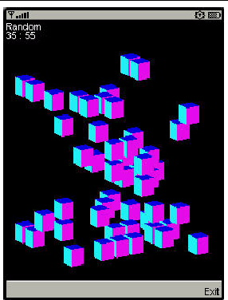
The keypad buttons in TABLE A-2 provide control over the game.
The source code for this example is particularly well documented. See toolkit\apps\Demo3D\src\com\superscape\m3g\wtksamples\life3d\Life3D.java.
PogoRoo shows you a kangaroo bouncing up and down on a pogo stick. To steer the kangaroo, use the arrow keys. Push up to go forward, down to go backward, and left and right to change direction. You might need to hold down the key to see an effect.
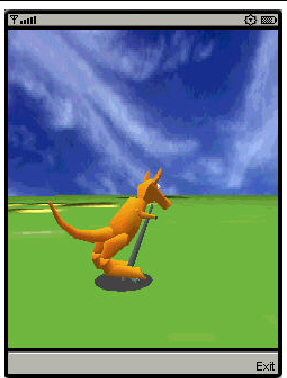
The retainedmode MIDlet plays a scene file that shows a tireless skateboarder in an endless loop.
FIGURE A-15 Tireless Skateboarder
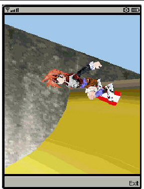
GoSIP is a chat application that uses SIP (JSR 180) to set up communications using a SIP proxy server and registrar.
Begin by running the SIP server. Choose File > Utilities. Select Start SIP Server and press Launch. The SIP proxy server window appears. Click Start to run the server.
Next, run two instances of the emulator with the GoSIP application.
FIGURE A-16 SIP Proxy and Registrar
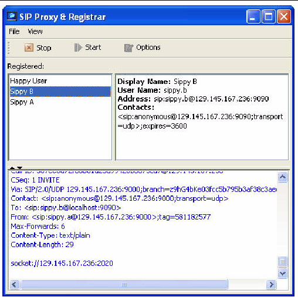
In the first emulator, launch Sippy A. Enter your local machine name or IP address when you are prompted for the proxy host and choose Next, then Register. In the SIP server window, SIP messages from the emulator appear. Sippy A appears in the list of registered users. The emulator suggests you invite your friend Sippy B to talk. Don't do it yet.
In the second emulator, launch Sippy B. Just as before, enter the address of the SIP proxy, choose Next, then Register. The Sippy B user appears in the SIP server window.
In the first emulator, choose Invite. The second emulator indicates that it's ringing. Choose Answer to start the chat. Both emulators now show a Talking screen. You can send messages back and forth using the Send command.
When you are finished, choose Bye to end the chat.
This MIDlet suite shows off the JSR 238 Mobile Internationalization API. The MIDlets String Comparator and Formatter show how to sort strings and display numbers appropriately for different locales. The third MIDlet, MicroLexicon, is a small phrase translator that comes in handy if you need to ask for a beer in Prague, Herzliya, Beijing, Milan, or several other locations.
To run a MIDlet, use SELECT to highlight the MIDlet, then use the lower right button to Launch the MIDlet.
The String Comparator MIDlet demonstrates how strings (city names) are sorted differently depending on locale. Launch the MIDlet. Use the lower right button to view the menu. Click or Type 2 to select Sort - default, and the list is sorted alphabetically. Click or Type 3 to select Sort - slovak. It's easy to see the difference in the cities that begin with the letter Z, with and without the mark on top. Click Exit to return to the list of MIDlets.
The second MIDlet, Formatter, simply displays times and numbers formatted for different locales. Click next to view all four screens. Click Exit to return to the list of MIDlets.
The final MIDlet, MicroLexicon, translates phrases from one language to another language. To select the target language from the list, use the navigation arrows to highlight Choose Language. Click SELECT to view the language drop down. Use the navigation arrows to choose a language (see FIGURE A-17) and then click SELECT.
FIGURE A-17 Choosing the Target Language

MicroLexicon displays a list of phrases. Highlight one and press the SELECT button on the emulator. You see the flag of the target language and the translated phrase.
To change the source language, choose Edit > Preferences. Click the i18n tab and enter a valid locale string. The next time you run the emulator and MicroLexicon, the instruction text appears in the given locale, if it is supported. One example that works is cs-CZ.
MicroLexicon is powered by MIDlet resources. To understand how you can use the toolkit to localize an application, choose Project > i18n Resources Manager. All the resources, both text and images, used by MicroLexicon, appear. You can edit the resources and run MicroLexicon again to see what happens. You don't need to build the application again because the resources are loaded at runtime.
FIGURE A-18 Internationalization Resources Manager
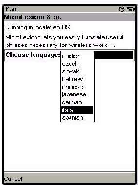
The resources themselves are stored in workdir\apps\i18nDemo\res\global.
JBricks is a game that demonstrates the use of the JSR 229 Payment API. The game itself resembles Breakout or Arkanoid. In JBricks, you can buy another life or a new game level. Behind the scenes, the Payment API handles the details.
To use the payment features of JBricks, use Project > Run via OTA to install JBricks into the emulator. If you don't know how to do this, read about it in Section 2.3.2, Install.
To see how JBricks uses the Payment API, choose either Buy Life or Buy Level from the game's main menu. Next, choose whether you want to buy a single life or three lives for a reduced price. The next screen gives you a choice of payment types.
FIGURE A-19 Choosing a Payment Type
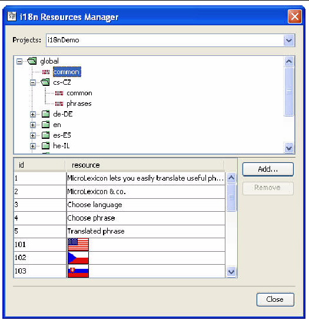
Use the navigation arrows to select the line starting with Pay by. Click the SELECT button to see the possible credit card adaptors in a drop down menu. Use the navigation arrows to select the VISA adaptor, then click SELECT. Click Yes on the lower right to proceed.
Next, you will be able to enter credit card information. Use any valid VISA number (for example, 4111111111111111) and a valid expiration date.
FIGURE A-20 Providing Payment Information
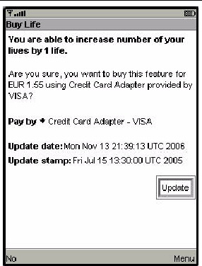
To view the transactions for the current instance of the emulator, choose MIDlet > External Events and click on the Payment Transactions tab. Transactions for this specific instance of the emulator appear.
FIGURE A-21 Viewing Transactions
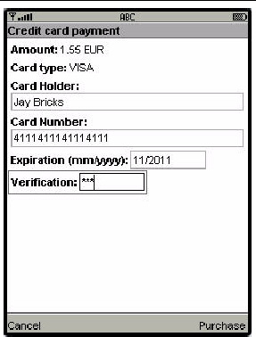
In addition, you can view all transactions passing through the toolkit's payment system. Choose File > Utilities, then select Payment Console. A transaction in the console looks something like the following:
JSR172Demo shows how to access a web service from a MIDlet. The web service is already running on an Internet server. If you are behind a firewall, you must configure the emulator's proxy server settings. Choose Edit > Preferences, then select Network Configuration. Fill in the proxy server address file and the port number. Build and run the example.
JSR172Demo contains a single MIDlet named Server Script. Launch it and follow the prompts. You can browse through simulated news headlines, all of which are retrieved from the web service.
To see what is going on behind the scenes, use the network monitor.
The MobileMediaAPI application contains four MIDlets that showcase the toolkit's multimedia capabilities. This section describes the MIDlets and includes additional information about using multimedia from your applications.
The Simple Tones example demonstrates how to use interactive synthetic tones. Select an example, then click Play on the lower right.
The Simple Player application demonstrates the range of audio and video capabilities of the emulator. It includes sample files in a variety of formats and can play files from the emulator's persistent storage or from HTTP URLs.
The player portion uses a generic javax.microedition.media.Player interface. The player displays duration, media time, and controls for running the media file. If metadata is available in a file, the player enables you to view the information, such as author and title. In the case of MIDI files, if karaoke text is present in the file, it displays on the screen during play. Graphical user interface controls can be viewed on the display screen if applicable. You can access these controls by selecting one of the media samples in Simple Player, then pressing the Menu button to view and select the desired command.
Select Simple Player then click Launch. The demo includes the following media samples:
In addition, Simple Player parses ring tones in Ringing Tones text transfer language (RTTTL). See http://www.convertyourtone.com/rtttl.html for information on RTTTL.
The Simple Player includes a common set of commands that control media playback. The commands are available from the Simple Player menu, and some have associated keypad buttons. The following table describes these commands.
The commands may or may not be available depending on the media type that Simple Player is playing. In addition, some commands can be invoked using the keypad buttons. The following table describes the availability of commands, their keypad equivalents, and the relevant class from MMAPI.
Note that a short list of commands and the corresponding keypad buttons is available in the Simple Player application itself. Just choose the Quick Help command from the menu.
The Video application illustrates how the emulator is capable of playing animated GIF files and capturing video. On a real device with a camera, video capture can be used to show the user what the camera sees.
Animated GIFs and video capture can be implemented using either a Form Item or a Canvas. The Video demonstration includes all the possibilities. Animated GIF - Form [jar] shows an animated GIF as a Form Item. The form also includes some information about the playback, including the current time. Choose the Snapshot command to take a snapshot of the running animation. The snapshot will be placed in the form following the animated GIF.
The MPEG1 applications obtain MPEGs from the web, so if you are behind a firewall, you must configure the emulator's proxy server settings.
Choose Edit > Preferences, then select Network Configuration. Check Use proxy server. Fill in the proxy server address field and the port number. For this demo, select HTTP/1.0.
When you play the demo, expect to wait a few seconds while WTK obtains the data. The MPEG1 demos have the same behavior as Video Capture - Form and Video Capture - Canvas, respectively.
This MIDlet exists to demonstrate how the Sun JavaTM Wireless Toolkit for CLDC will warn you if a paused MIDlet has not stopped its running Players. After you launch the MIDlet, choose the Play command to start playing some audio. The screen displays a status, which is either "Well-behaved" or "Not Well-Behaved."
Choose MIDlet > Pause from the emulator window's menu. As expected, the MIDlet is paused and no message is displayed on the toolkit console. Choose MIDlet > Resume from the emulator window's menu.
Now choose the Misbehave command. Pause the MIDlet again. In the toolkit console, you see the warning: An active media (subtype Player) resource was detected while the MIDlet is paused. Well-behaved MIDlets release their resources in pauseApp().
The MobileMediaAPI applications have the following attributes that you can modify in the project settings dialog box User Defined tab:
This demo has two MIDlets: Socket Demo and Datagram Demo. Each demo requires you to run two emulator instances so that you can emulate the server and client relationship.
Run two instances of the emulator. One acts as the socket server, and the other as the socket client.
In the first emulator, launch the application, then select the Server peer. Choose Start. The emulator explains that the demo wants to send and receive data over the network and asks, "Is it OK to use network?" Choose Yes. The Socket Server displays a screen that indicates it is waiting for a connection.
In the second emulator, launch the application, select the Client peer, then choose Start. The emulator explains that the demo wants to send and receive data over the network and asks, "Is it OK to use network?" Choose Yes. The Socket Client displays a screen that indicates it is connected to the server. Use the down navigation arrow to highlight the Send box. Type a message in the Send box, then choose the Send soft key.
For example, in the client, type Hello Server In the Send box (see FIGURE A-22). Choose the Send soft key. The emulator activates a blue light during the transmission.
FIGURE A-22 Sending a Message from the Socket Client

On the emulator running the Socket Server, the Status reads: Message received - Hello Server. You can use the down arrow to move to the Send box and type a reply. For example, Hello Client, I heard you. Select Send. See FIGURE A-23.
FIGURE A-23 Server Shows Message Received and Message to Send
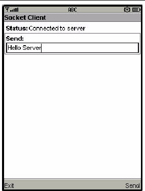
Back in the Socket Client, the status shows the message received from the server. Until you send a new message, the Send box contains the previous message you sent.
This demo is similar to Socket Demo.
Run two instances of the emulator. One acts as the datagram server, and the other as the datagram client.
In the first emulator, launch Datagram Demo, then select the Server peer. Choose Start. The emulator explains that the demo wants to send and receive data over the network and asks, "Is it OK to use network?" Choose Yes. Initially, the Datagram Server status is Waiting for connection, and the Send box is empty.
In the second emulator, launch Datagram Demo, select the Client peer, then choose Start. The emulator explains that the demo wants to send and receive data over the network and asks, "Is it OK to use network?" Choose Yes. The Datagram Client status is: Connected to server. Use the down navigation arrow to highlight the Send box. Type a message in the Send box, then choose the Send soft key. For example, type Hello datagram server.
On the emulator running the Datagram Server, the Status displays: Message received - Hello datagram server. You can use the down arrow to move to the Send box and type a reply to the client.
In the Datagram Client, the status field displays the message received from the server. The Send box contains the last message you sent.
This application shows how to transfer image files between emulator instances using the OBEX API. This demonstration shows the use of OBEX over a simulated infrared connection.
Run two instances of the emulator. One listens for incoming connections, while the other attempts to send an image. In the first emulator, launch the application then choose Obex Demo, then Receive Image. The emulator explains that an OBEX connection allows other devices to talk to yours and asks, "Is it OK to make the connection?" Choose Yes. The listener emulator displays a screen that indicates it is waiting for incoming connections.
In the second emulator (the sender), launch Obex Demo, then choose Send Image. You see a list of images. Select one and choose Send. The emulator explains the demo wants to make an outgoing client connection, and asks if it is OK. Choose Yes. The Send Image utility uploads the image.
In the listening emulator, the utility displays information about the incoming image and asks "Would you like to receive it?" See FIGURE A-24.
FIGURE A-24 Listener Prompting to Accept a Connection
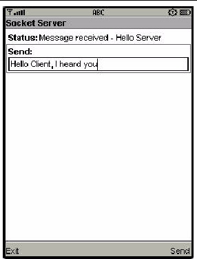
Choose Yes. The image you selected is transferred over the simulated infrared link and displayed on the first emulator. See FIGURE A-25.
FIGURE A-25 Successfully Transferred Image
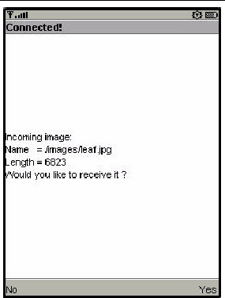
PDAPDemo shows how to use the PIM and FileConnection APIs that are part of the JSR 75 specification.
To run the file browser, you'll need to give the MIDlet appropriate security authorization, if you have not already done so. Choose Edit > Preferences. Click on the Security tab. Change the Security domain to maximum and press OK.
Now open and run the PDAPDemo project. Launch the FileBrowser MIDlet. You see a directory listing, and you can browse through the available directories and files. By default there is one directory, root1.
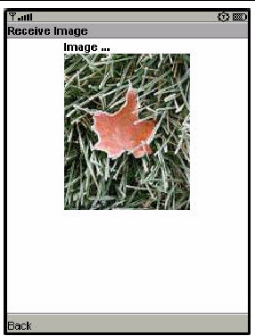
Select the directory and press the select button to enter it.
FIGURE A-27 Contents of the root1 Directory
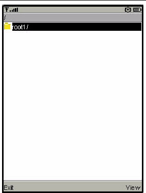
Using the commands in the demonstration, you can view the file or see its properties. Try selecting the file and choosing Properties or View from the menu.
FIGURE A-28 Viewing File Contents and File Properties
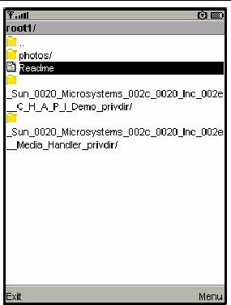
The actual files are located in workdir\appdb\DefaultColorPhone\filesystem, assuming you are using the DefaultColorPhone emulator skin. You can add files and root directories as you wish and they will be visible to the JSR 75 File API. See Chapter 10 for more information.
The JSR75 PIM APIs example demonstrates how to access personal information, like contact lists, calendars, and to-do lists. After you launch the example, choose a type of list from the main menu.
In this example application, each type of list works the same way and each list type contains a single list. For example, if you choose Contact Lists, there is a single contact list called Contacts. Event Lists contains a single list called Events, and To Do Lists contains a single list named To Do.
FIGURE A-29 Choosing a List Type
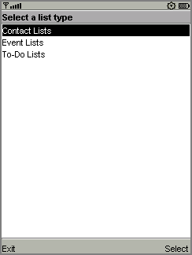
Once you've selected a list type and chosen the specific list, you can view all the items in the list. If this is the first time you've run the example, the list is probably empty.
To add an item, choose New from the menu. The application prompts you for a Formatted Name for the item. You can add more data fields to this item using Add Field in the menu. You see a list of field names. Pick one, then enter the value for the new field.
FIGURE A-30 Adding Contact Fields
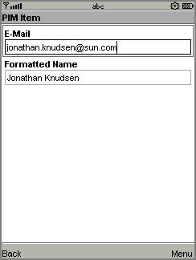
To save the list item, choose Commit (option 3) from the menu.
You can return to the list by choosing the Back command. You'll see the item you just created in the list.
The items that you create are stored in standard vCard or vCalendar format in the workdir\appdb\skin\pim directory. See Chapter 10 for more information.
The PIM API allows for exporting contact, calender, and to-do items in a standard format. The exact format depends on the list type. When you are viewing an item in any list, the menu contains a command for viewing the exported item.
For example, when you are viewing a contact list item, the menu contains Show vCard. When you choose this command, the exported item is shown on the screen. Calendar items and to-do items both get exported as vCalendar.
SATSADemos includes demonstrations of SATSA, the Security and Trust Services APIs. Most of the demonstrations show how to communicate with a smart card. The emulator can communicate with a simulated smart card using a socket protocol. The smart card simulator, cref, is included with the toolkit. See Chapter 14 for details.
The following sections contain instructions for each menu choice for this demo. For each demo, be sure to do the following before launching the emulator:
This MIDlet demonstrates communication with a smart card using Application Protocol Data Units (APDUs), small packets of data. APDUMIDlet expects to find two simulated smart cards. You can run the smart card simulator using cref, which is part of the Java Card Development Kit.
The Mohair application includes pre-built memory images that you can use with cref. The memory images contain Java Card applications with which Mohair interacts. The memory images are in the root directory of the Mohair project.
On Windows, start up two instances of cref like this, one for each simulated card slot (assuming the current directory is the toolkit installation directory):
start bin\cref -p 9025 -i apps\SATSADemos\demo2.eeprom start bin\cref -p 9026 -i apps\SATSADemos\demo2.eeprom
toolkit/bin/cref -p 9025 -i apps/SATSADemos/demo2.eeprom toolkit/bin/cref -p 9026 -i apps/SATSADemos/demo2.eeprom
Note that the port numbers (9025 and 9026 in this example) must match the port numbers you specified in the SATSA preferences, described in Chapter 14. Also, make sure you use the correct path to demo2.eeprom.
Once you have the two smart card simulators running, you can run APDUMIDlet.
SATMIDlet demonstrates smart card communication with a slight variation on APDU communication.
To set up the simulated smart card, use cref, very much like you did for APDUMIDlet. This time you don't have to specify a port number, and the memory image is different:
When the smart card simulator is running, you can run SATMIDlet to communicate with card applications.
CryptoMIDlet demonstrates the general cryptographic features of SATSA. It does not interact with a smart card in any way.
MohairMIDlet has two functions. The first, Find slots, displays all the available card slots. Each slot has a number followed by `C' or `H' indicating whether the slot is cold-swappable or hot-swappable. After viewing the slots select Back to return to the first screen.
The second part of MohairMIDlet, SATSA-PKI Sign test, uses a smart card to generate a digital signature. As with the earlier demonstrations, you need to run cref with the right memory image to prepare for the connection from MohairMIDlet. Type the following in the installation directory:
In the emulator, highlight SATSA-PKI Sign test and choose SELECT. The following confirmation message appears:
This certificate will be used: MohairAuth
Select the OK soft key. The following confirmation message appears:
This string will be signed: JSR 177 Approved
Select the OK soft key. The following confirmation message appears:
This certificate will be used: MohairAuth
For non repudiation key 1 PIN, type: 2345
This application contains a single MIDlet, JCRMIMIDlet, which shows how to communicate with a card application using Java Card RMI, a card-friendly remote object protocol. As with some of the MIDlets in SATSADemos, you need to start up cref with an appropriate memory image:
Now run JCRMIMIDlet to see how your application can communicate with a distributed object on the card.
This application is a very simple example of using SIP (JSR 180) to communicate directly between two devices. Usually devices will use SIP with a proxy server to set up direct communications of some kind. For a more complete example involving a proxy, take a look at GoSip.
To see how SIPDemo works, run two instances of the emulator. In the first, choose Receive message. You can use the default port, 5070, and choose Receive. The first emulator is now listening for incoming messages.
In the second emulator, choose Send message. Fill in values for the recipient, port number, subject, and message, or accept the defaults, and choose Send. Your message will be displayed in the first emulator. The first emulator's response is displayed in the second emulator.
Try it again with the network monitor turned on. You can see the communication between the emulators in the network monitor SIP tab.
This application uses different skins to display the same contact list information and a news banner. The skins have different colors and fonts.
Select SVGContactlist(skin 1) or SVGContactlist(skin 2), then click Launch.
Use the up and down arrows to navigate the list of contacts. The highlighted name is marked with a special character (a > or a dot) and is displayed in a larger font.
FIGURE A-31 Contact List Shown with Skin 2

Press the select button to see more information for the highlighted name.
FIGURE A-32 Contact List Details
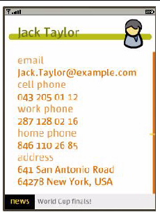
Press select again to return to the contact list.
This suite contains MIDlets that demonstrate different ways of using the JSR 226 Scalable 2D Vector Graphics API for J2ME. This API provides ways to load manipulate, render, and play SVG content.
The Scalable Vector Graphics (SVG) 1.1 specification defines a language for describing two-dimensional graphics in XML. The full specification is available at http://www.w3.org/TR/SVG11/.
SVG Tiny (SVGT) is a subset of SVG that is appropriate for small devices like mobile phones. See http://www.w3.org/TR/SVGMobile/. SVG Tiny is a compact yet powerful XML format for describing rich, interactive, and animated 2D content. Graphical elements can be logically grouped and identified by the SVG markup.
The SVGBrowser MIDlet displays SVG files residing in the phone file system. Before running this demo, place an SVG file in the directory workdir\appdb\DefaultColorPhone\filesystem\root1.
Launch the demo. The application displays the contents of root1. Select your SVG file and choose the Open soft key.
Render SVG Image loads an SVG image from a file and renders it. Looking at the demo code you can see that the image is sized on the fly to exactly fit the display area. The output is clear and sharp.
This application plays an SVG animation depicting a Halloween greeting card. Press 8 to play, 5 to start, and 0 to stop. If you press 8, pressing 5 resumes the animation. If you press 0, pressing 5 starts the animation from the beginning.
The SVG file contains a description of how the various image elements evolve over time to provide this short animation.
In the following code sample, the JSR 226 javax.microedition.m2g.SVGImage class is used to load the SVG resource. Then, the javax.microedition.m2g.SVGAnimator class can take all the complexity of SVG animations and provides a java.awt.Component or javax.swing.JComponent which plays the animation. The SVGAnimator class provides methods to play, pause and stop the animation.
This demo builds an image using API calls. It creates an empty SVGImage, populates it with a graphical content, and then displays that content.
Bouncing Balls plays an SVG animation. Press 8 to play, 5 to start, and 0 to stop. If you press 8, pressing 5 resumes the animation. If you press 0, pressing 5 starts the animation from the beginning.
In this demo, selected icons have a yellow border. As you move to a new icon, it becomes selected and the previous icon flips to the unselected state. If you navigate off the icon grid, selection loops around. That is, if the last icon in a row is selected, moving right selects the first icon in the same row.
This demo illustrates the flexibility that combining UI markup and Java offers: a rich set of functionality (graphics, animations, high-end 2D rendering) and flexibility in graphic manipulation, pre-rendering or playing.
In this example, a graphic artist delivered an SVG animation defining the transition state for the menu icons, from the unselected state to the selected state. The program renders each icon's animation sequence separately into off-screen buffers (for faster rendering later on), using the JSR 226 API.
With buffering, the MIDlet is able to adapt to the device display resolution (because the graphics are defined in SVG format) and still retain the speed of bitmap rendering. In addition, the MIDlet is still leveraging the SVG animation capabilities.
The task of defining the look of the menu items and their animation effect (the job of the graphic artist and designer) is cleanly separated from the task of displaying the menu and starting actions based on menu selection (the job of the developer). The two can vary independently as long as both the artist and the developer observe the SVG document structure conventions.
In this demo you use the phone keys to add decorations to a photograph. The key values are:
This demo provides 16 pictures for you to decorate.
Use the 2 and 6 keys to page forward and back through the photos.
To decorate, press # to display the picker. Use the arrow keys to highlight a graphic object. The highlighted object is enlarged. Press SELECT to choose the current graphic or press the arrow keys to highlight a different graphic. Press SELECT again to add the graphic to the photo. When the decoration is added you see a red + on the graphic. This means it is selected and can be moved, resized, and manipulated.
FIGURE A-33 Decorated Picture with Quotation Selected
Use the navigation arrows to move the graphic. Use 1 to shrink the graphic, and 3 to enlarge the graphic. Use 5 or 6 to flip, and 7 or 9 to rotate. When you are satisfied with the position, press SELECT. Note that a green triangle appears. This is a cursor. Use the navigation keys to move the green triangle around the picture. When the cursor is over an object it is highlighted with a red box. Press SELECT. The red + indicates the object is selected.
FIGURE A-34 Highlighted Mustache
To remove a decoration (a property), select an object, then click the Menu soft key. Press 2 to remove a property.
Launch the application. A splash screen (also used as the help) appears. The initial view is a map of your itinerary - a walk through San Francisco. The bay (in blue) is on the right of your screen. Press 1 to start following the itinerary. The application zooms in on your location on the map. Turn-by-turn directions appear in white boxes on the horizontal axis. While the itinerary is running, Press 7 to rotate the map counter-clockwise. Note, the map rotates and the text now appears on the vertical axis. Press 7 again to restore the default orientation. Press 4 to display the help screen.

This application shows how to send and receive SMS, CBS, and MMS messages. The Sun JavaTM Wireless Toolkit for CLDC offers a flexible emulation environment to support messaging. Messages can be exchanged between emulator instances and can be generated or received using the WMA console utility.
Because this example makes use of the push registry, you can't see all of its features just by using the Run button. Use the Run via OTA feature to install the application into the emulator in a process that mirrors how applications are installed on real devices. If you don't know how to do this, read about it in Chapter 2.
To exercise the push registry, use the WMA console to send the emulator a message. Launch the console by choosing File > Utilities. Click on the Open Console button in the WMA box to launch the WMA console.
Click on the Send SMS... button in the WMA console window. Choose the number that corresponds to the emulator, probably +5550000. If you're not sure what number the emulator is using, look in its title bar. Choose the number in the SMS message window, then fill in a port number of 50000. Type your text message in the Message field and click on Send.
FIGURE A-36 Sending a Text Message
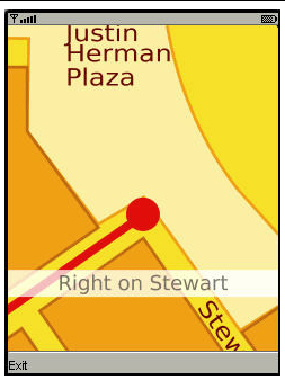
The emulator asks if it can launch the WMADemo application.
FIGURE A-37 Push Registry Message
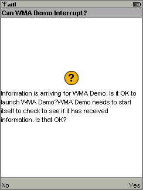
Choose Yes. The SMSReceive MIDlet is launched and immediately displays the incoming SMS message.
FIGURE A-38 Incoming Text Message

You can also use the WMA console to send and receive CBS and MMS messages. See Chapter 7 for more information.
For example, to send an MMS message from the WMA console to the emulator, make sure that WMADemo has been installed using Run via OTA as described above. Launch the demo and choose MMS Receive.
In the WMA console, click on Send MMS... to open the MMS composition window. Fill in a message subject, the application ID example.mms.MMSDemo, and the telephone number of the running emulator.
FIGURE A-39 Addressing an MMS message
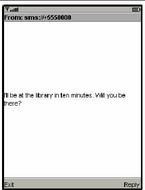
Next, click on the Parts tab. The WMA console allows you to select files from your hard disk that you wish to send as parts of the MMS message. Click Add to add a file to the message. Use the file browser to find the file you want to send and click OK.
FIGURE A-40 Adding Parts to an MMS Message
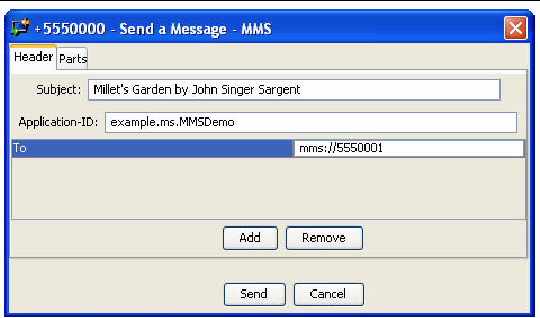
Click on Send to send the message.
The emulator asks if it can launch WMADemo. Click on Yes. The image and its information are displayed.
FIGURE A-41 WMADemo Receives the Image
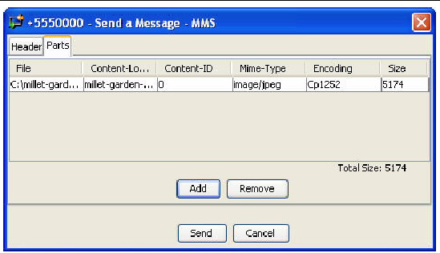
| Sun Java Wireless Toolkit for CLDC User's Guide |
Copyright © 2007, Sun Microsystems, Inc. All Rights Reserved.